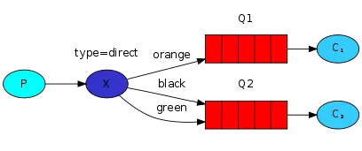

由于项目原因，之后会和RabbitMQ比较多的打交道，所以让我们来好好整理下RabbitMQ的应用实战技巧，尽量避免日后的采坑
RabbitMQ有几个重要的概念：虚拟主机，交换机，队列和绑定
交换机有四种类型的模式Direct, topic, Headers and Fanout
Direct模式使用的是RabbitMQ的默认交换机，也是最简单的模式，适合比较简单的场景
如下图所示，使用Direct模式，我们需要创建不同的队列，而默认交换机则通过Routing key路由键的值来决定转发到哪个队列，可以看到，路由键绑定队列是可以指定多个的

Topic模式主要是根据通配符匹配，也就类似于模糊匹配，当这种匹配模式和路由键匹配后交换机就能转发消息到指定队列
.）隔开，比如a.b.c*）代表指定位置一个单词，（#）代表零个或者多个单词，比如a.*.b.#，表示a和b中间随意填个单词，b后面可以跟n个单词，比如a.x.b.c.d.eTopic模式和Direct模式的区别在于交换机需要自己指定，路由键支持模糊匹配，例如：
rabbitTemplate.convertAndSend("topicExchange","a.x.b.d", " hello world!");Headers也是根据规则匹配，但它不是根据路由键了，headers有个自定义匹配规则，它将匹配键值设在了消息的headers属性上，当这些键值对有一对或者全部匹配时，消息才会被投递到对应队列，这种模式效率相对较低，一般不推荐使用
Fanout即为大名鼎鼎的广播模式了，它不需要管路由键，会把消息发给绑定它的全部队列，就算配置了路由键也会被忽略
topic.message发送消息，队列queueMessage和queueMessages都能接收到相同消息，也就是说，topic模式可以实现类似于广播模式的形式，甚至更加灵活，它能否转发到消息由路由键决定。@Configuration
public class TopicRabbitConfig {
final static String message = "topic.message";
final static String messages = "topic.messages";
@Bean
public Queue queueMessage() {
return new Queue(TopicRabbitConfig.message);
}
@Bean
public Queue queueMessages() {
return new Queue(TopicRabbitConfig.messages);
}
@Bean
TopicExchange exchange() {
return new TopicExchange("exchange");
}
@Bean
Binding bindingExchangeMessage(Queue queueMessage, TopicExchange exchange) {
return BindingBuilder.bind(queueMessage).to(exchange).with("topic.message");
}
@Bean
Binding bindingExchangeMessages(Queue queueMessages, TopicExchange exchange) {
return BindingBuilder.bind(queueMessages).to(exchange).with("topic.#");
}
}我们的常用配置如下
spring.rabbitmq.addresses=localhost:5672
spring.rabbitmq.username=user
spring.rabbitmq.password=123456
spring.rabbitmq.virtual-host=/
spring.rabbitmq.connection-timeout=1000
##设置监听限制：最大10，默认5
spring.rabbitmq.listener.simple.concurrency=5
spring.rabbitmq.listener.simple.max-concurrency=10
spring.rabbitmq.publisher-confirms=true
spring.rabbitmq.publisher-returns=true
spring.rabbitmq.template.mandatory=true
spring.rabbitmq.listener.simple.acknowledge-mode=manual其中最后四条配置需要着重解释：
spring.rabbitmq.publisher-confirms为true，表示生产者消息发出后，MQ的broker接收到了消息，发送回执表示确认接收，不设置则可能导致消息丢失spring.rabbitmq.publisher-returns为true，表示当消息不能到达MQ的Broker端，，则使用监听器对不可达的消息做后续处理，这种一般是路由键没配好，或MQ宕机才可能发生spring.rabbitmq.template.mandatory当上面两个为true时，这个一定要配true，否则上面两个不起作用spring.rabbitmq.listener.simple.acknowledge-mode这个为manual表示手工确认，实际生产应该设为手工，才能保证你的业务是处理完成的，注意业务的幂等性，可重复调用，手工确认代码如下例子@Component
public class RabbitReceiver {
@RabbitListener(bindings = @QueueBinding(
value = @Queue(value = "queue-1",
durable="true"),
exchange = @Exchange(value = "exchange-1",
durable="true",
type= "topic",
ignoreDeclarationExceptions = "true"),
key = "springboot.*"
)
)
@RabbitHandler
public void onMessage(Message message, Channel channel) throws Exception {
System.err.println("--------------------------------------");
System.err.println("消费端Payload: " + message.getPayload());
Long deliveryTag = (Long)message.getHeaders().get(AmqpHeaders.DELIVERY_TAG);
//手工ACK,获取deliveryTag
channel.basicAck(deliveryTag, false);
}
}x-message-ttl为5000，则表示消息超过5秒没被处理就会超时过期；x-expires设置120000表示队列在2分钟内没被消费则被删除；x-max-length,x-max-length-bytes表示传送数据的最大长度和字节数x-dead-letter-exchange，x-dead-letter-routing-key表示死信交换机和死信路由，放在需要过期或处理失败的队列属性中，这些数据会转发到死信队列存储起来，创建普通的交换机和队列绑定，把交换机名填到x-dead-letter-exchange的值，填写路由键要符合死信队列的路由键x-max-priority，表示设置优先级，范围为0~255，只有当消息堆积的时候，这个优先级才有意义，数字越大优先级越高x-queue-mode当为lazy，表示惰性队列，3.6.0之后才被引入的概念，相比默认的模式，惰性队列模式会将生产者产生的消息直接存到磁盘中，这当然会增加IO开销，但适合应对大量消息堆积的情况；因为当大量消息堆积时，内存也不够存放，会将消息转存到磁盘，这个过程也是比较耗时且过程中不能接收新的消息。如果需要将普通队列转换成惰性队列需要将原来的队列删除，重新创建个惰性队列绑定。alternate-exchange，表示当生产者发送消息到这个交换机，路由不到该交换机的队列，则会尝试这个参数指定的交换机进行路由，若路由键匹配，则路由到alternate-exchange指定的队列，相当于转发了，刚好和上一个参数internal配合，若不想本交换机起到路由队列的作用，可以设置internal为true，把消息都转发到alternate-exchange指定的交换机，由该交换机来路由指定队列，
exchange0设置了alternate-exchange交换机为exchange1，生产者发送数据到exchange0路由键为test1，在exchange0路由不到，则转发到exchange1判断路由符合，发送到队列queue1在RabbitMQ的管理界面，当我们集群部署时可以看到Nodes节点中Info字段可能为disc也可能ram，表示了磁盘存储或内存储存。事实上，在集群部署的时候，我们至少要一个磁盘储存，它代表了将交换机，队列，绑定，用户等元数据持久化保存到磁盘，一遍重启RabbitMQ也能恢复到原先的状态，当只有一个节点时，必定是磁盘存储；而内存储存也有它的优势，就是效率更高速度更快
exclusive属性的队列，由于同一个连接创建的不同通道可以访问同一个队列，此时由于这个排他属性会得到资源被锁定错误，也就是下列的错误。exclusive属性的，那么就别创建新的连接去访问同一个队列ESOURCE_LOCKED - cannot obtain exclusive access to locked queue xxxxxx今日教学视频：RabbitMQ消息队列从入门到精通，长按图片到百度云
欢迎关注公众号，一起学习进步